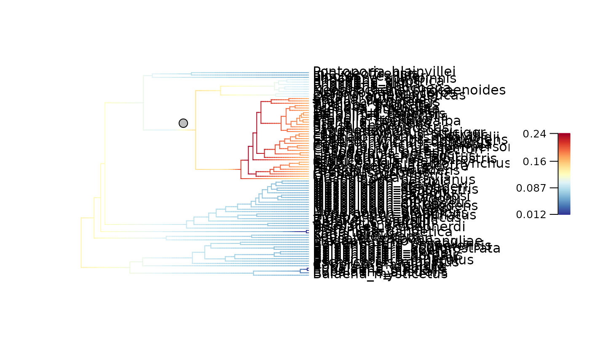
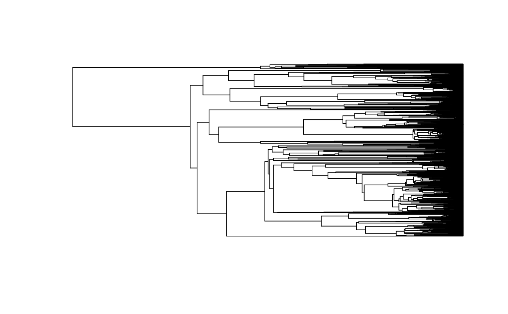
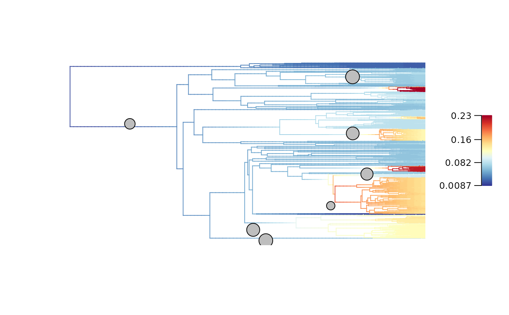

Run a full BAMM (Bayesian Analysis of Macroevolutionary Mixtures) workflow
Source:R/prepare_diversification_data.R
prepare_diversification_data.RdRun a full BAMM (Bayesian Analysis of Macroevolutionary Mixtures) workflow
to produce a BAMM_object that contains a phylogenetic tree and associated diversification rates
mapped along branches, across selected posterior samples:
Step 1: Set BAMM - Record BAMM settings and generate all input files needed for BAMM.
Step 2: Run BAMM - Run BAMM and move output files in dedicated directory.
Step 3: Evaluate BAMM - Produce evaluation plots and ESS data.
Step 4: Import BAMM outputs - Load
BAMM_objectin R and subset posterior samples.Step 5: Clean BAMM files - Remove files generated during the BAMM run.
The BAMM_object output is typically used as input to run deepSTRAPP with run_deepSTRAPP_for_focal_time()
or run_deepSTRAPP_over_time(). Diversification rates and regimes shift can be visualized with plot_BAMM_rates().
BAMM is a model of diversification for time-calibrated phylogenies that explores complex diversification dynamics by allowing multiple regime shifts across clades without a priori hypotheses on the location of such shifts. It uses reversible jump Markov chain Monte Carlo (rjMCMC) to automatically explore a vast range of models with different speciation and extinction rates, and different number and location of regime shits.
This function will work only if you have the BAMM C++ program installed in your machine. See the BAMM website: http://bamm-project.org/ and the companion R package BAMMtools.
Usage
prepare_diversification_data(
BAMM_install_directory_path,
phylo,
prefix_for_files = NULL,
seed = NULL,
numberOfGenerations = 10^7,
globalSamplingFraction = 1,
sampleProbsFilename = NULL,
expectedNumberOfShifts = NULL,
eventDataWriteFreq = NULL,
burn_in = 0.25,
nb_posterior_samples = 1000,
additional_BAMM_settings = list(),
BAMM_output_directory_path = "./BAMM_outputs/",
keep_BAMM_outputs = TRUE,
MAP_odd_ratio_threshold = 5,
skip_evaluations = FALSE,
plot_evaluations = TRUE,
save_evaluations = TRUE
)Arguments
- BAMM_install_directory_path
Character string. The path to the directory where BAMM is. Use '/' to separate directory and sub-directories. The path must end with '/'.
- phylo
Time-calibrated phylogeny. Object of class
"phylo"as defined in R package ape. The phylogeny must be rooted and fully resolved. BAMM does not currently work with fossils, so the tree must also be ultrametric.- prefix_for_files
Character string. Prefix to add to all BAMM files stored in the
BAMM_output_directory_pathifkeep_BAMM_outputs = TRUE. Files will be exported such as 'prefix_*' with an underscore separating the prefix and the file name. Default isNULL(no prefix is added).- seed
Integer. Set the seed to ensure reproducibility. Default is
NULL(a random seed is used).- numberOfGenerations
Integer. Number of steps in the MCMC run. It should be set high enough to reach the equilibrium distribution and allows posterior samples to be uncorrelated. Check the Effective Sample Size of parameters with coda::effectiveSize() in the Evaluation step. Default value is
10^7.- globalSamplingFraction
Numerical. Global sampling fraction representing the overall proportion of terminals in the phylogeny compared to the estimated overall richness in the clade. It acts as a multiplier on the rates needed to achieve such extant diversity. Default is
1.0(assuming all taxa are in the phylogeny).- sampleProbsFilename
Character string. The path to the
.txtfile used to provide clade-specific sampling fractions. SeeBAMMtools::samplingProbs()to generate such file. If provided,globalSamplingFractionis ignored.- expectedNumberOfShifts
Integer. Set the expected number of regime shifts. It acts as an hyperparameter controlling the exponential prior distribution used to modulate reversible jumps across model configurations in the rjMCMC run. If set to
NULL(default), an empirical rule will be used to define this value: 1 regime shift expected for every 100 tips in the phylogeny, with a minimum of 1. The best practice consists in trying several values and inspect the similarity of the prior and posterior distribution of the regime shift parameter. SeeBAMMtools::plotPrior()and the Evaluation step to produce such evaluation plot.- eventDataWriteFreq
Integer. Set the frequency in which to write the event data to the output file = the sampling frequency of posterior samples. If set to
NULL(default), will set frequency such as 2000 posterior samples are recorded such aseventDataWriteFreq = numberOfGenerations / 2000.- burn_in
Numerical. Proportion of posterior samples removed from the BAMM output to ensure that the remaining samples where drawn once the equilibrium distribution was reached. This can be evaluated looking at the MCMC trace (see Evaluation step). Default is
0.25.- nb_posterior_samples
Numerical. Number of posterior samples to extract, after removing the burn-in, in the final
BAMM_objectto use for downstream analyses. Default =1000.- additional_BAMM_settings
List of named elements. Additional settings options for BAMM provided as a list of named arguments. Ex:
list(lambdaInit0 = 0.5, muInit0 = 0). See available settings in the template file provided within the deepSTRAPP package files as 'BAMM_template_diversification.txt'. The template can also be loaded directly in R withutils::data(BAMM_template_diversification)and displayed withprint(BAMM_template_diversification).- BAMM_output_directory_path
Character string. The path to the directory used to store input/output files generated. Use '/' to separate directory and subdirectories. It must end with '/'. Default is
./BAMM_outputs/- keep_BAMM_outputs
Logical. Whether the
BAMM_output_directoryshould be kept after the run. Default =TRUE.- MAP_odd_ratio_threshold
Numerical. Controls the definition of 'core-shifts' used to distinguish across configurations when fetching the MAP samples. Shifts that have an odd-ratio of marginal posterior probability / prior lower than
MAP_odd_ratio_thresholdare ignored. SeeBAMMtools::getBestShiftConfiguration(). Default =5.- skip_evaluations
Logical. Whether to skip the Evaluation step including MCMC trace, ESS, and prior/posterior comparisons for expected number of shifts. Default =
FALSE.- plot_evaluations
Logical. Whether to display the plots generated during the Evaluation step: MCMC trace, and prior/posterior comparisons for expected number of shifts. Default =
TRUE.- save_evaluations
Logical. Whether to save the outputs of evaluations in a table (ESS), and PDFs (MCMC trace, and prior/posterior comparisons for expected number of shifts) in the
BAMM_output_directory. Default =TRUE.
Value
The function returns a BAMM_object of class "bammdata" which is a list with at least 22 elements.
Phylogeny-related elements used to plot a phylogeny with ape::plot.phylo():
$edgeMatrix of integers. Defines the tree topology by providing rootward and tipward node ID of each edge.$NnodeInteger. Number of internal nodes.$tip.labelVector of character strings. Labels of all tips.$edge.lengthVector of numerical. Length of edges/branches.$node.labelVector of character strings. Labels of all internal nodes. (Present only if present in the initialBAMM_object)
BAMM internal elements used for tree exploration:
$beginVector of numerical. Absolute time since root of edge/branch start (rootward).$endVector of numerical. Absolute time since root of edge/branch end (tipward).$downseqVector of integers. Order of node visits when using a pre-order tree traversal.$lastvisitID of the last node visited when starting from the node in the corresponding position in$downseq.
BAMM elements summarizing diversification data:
$numberEventsVector of integer. Number of events/macroevolutionary regimes (k+1) recorded in each posterior configuration. k = number of shifts.$eventDataList of data.frames. One per posterior sample. Records shift events and macroevolutionary regimes parameters. 1st line = Background root regime.$eventVectorsList of integer vectors. One per posterior sample. Record regime ID per branches.$tipStatesList of named integer vectors. One per posterior sample. Record regime ID per tips.$tipLambdaList of named numerical vectors. One per posterior sample. Record speciation rates per tips.$tipMuList of named numerical vectors. One per posterior sample. Record extinction rates per tips.$eventBranchSegsList of matrix of numerical. One per posterior sample. Record regime ID per segments of branches.$meanTipLambdaVector of named numerical. Mean tip speciation rates across all posterior configurations of tips.$meanTipMuVector of named numerical. Mean tip extinction rates across all posterior configurations of tips.$typeCharacter string. Set the type of data modeled with BAMM. Should be "diversification".
Additional elements providing key information for downstream analyses:
$expectedNumberOfShiftsInteger. The expected number of regime shifts used to set the prior in BAMM.$MSP_treeObject of classphylo. List of 4 elements duplicating information from the Phylogeny-related elements above, except$MSP_tree$edge.lengthis recording the Marginal Shift Probability of each branch (i.e., the probability of a regime shift to occur along each branch)$MAP_indicesVector of integers. The indices of the Maximum A Posteriori probability (MAP) configurations among the posterior samples.$MAP_BAMM_object. List of 18 elements of class `"bammdata" recording the mean rates and regime shift locations found across the Maximum A Posteriori probability (MAP) configurations. All BAMM elements summarizing diversification data holds a single entry describing this mean diversification history.$MSC_indicesVector of integers. The indices of the Maximum Shift Credibility (MSC) configurations among the posterior samples.$MSC_BAMM_objectList of 18 elements of class `"bammdata" recording the mean rates and regime shift locations found across the Maximum Shift Credibility (MSC) configurations. All BAMM elements summarizing diversification data holds a single entry describing this mean diversification history.
The function also produces files listed in the Details section and stored in the the BAMM_output_directory.
Details
This function runs a full BAMM (Bayesian Analysis of Macroevolutionary Mixtures) workflow
to produce a BAMM_object that contains a phylogenetic tree and associated diversification rates
mapped along branches, across selected posterior samples.
Step 1: Set BAMM
Produces a tree file for the phylogeny. Default file: 'phylogeny.tree'.
Save configuration settings used for the BAMM run. Default file: 'config_file.txt'.
Save default priors generated by BAMMtools::setBAMMpriors based on the phylogeny. Default file: 'priors.txt'.
Step 2: Run BAMM
Run BAMM using the system console
Move output files in dedicated
BAMM_output_directory. Default directory is./BAMM_outputs/.'run_info.txt' containing a summary of your parameters/settings.
'mcmc_log.txt' containing raw MCMC information useful in diagnosing convergence.
'event_data.txt' containing all evolutionary rate parameters and their topological mappings.
'chain_swap.txt' containing data about each chain swap proposal (when a proposal occurred, which chains might be swapped, and whether the swap was accepted).
'acceptance_info.txt' containing the history of acceptance/proposal of MCMC steps (If additional setting
outputAcceptanceInfois set to 1).
Step 3: Evaluate BAMM
Plot the MCMC trace = evolution of logLik across MCMC generations. Output file = 'MCMC_trace_logLik.pdf'.
Compute the Effective Sample Size (ESS) across posterior samples (after removing burn-in) using
coda::effectiveSize(). This is a way to evaluate if your MCMC runs has enough generations to produce robust estimates. Ideally, ESS should be higher than 200. Output file = 'ESS_df.csv'.Plot the comparison of prior and posterior distributions of the number of regime shifts with BAMMtools::plotPrior. Output file = 'PP_nb_shifts_plot.pdf'. A good value for
expectedNumberOfShiftsis one with high similarities between the distributions hinting that the information in the data coincides with your expectations for the number of regime shifts. The best practice consists in trying several values to control if it affects or not the final output.
Step 4: Import BAMM outputs
Load BAMM outputs with BAMMtools::getEventData.
Subset posterior samples to the requested
nb_posterior_sampleswith BAMMtools::subsetEventData.Record the
$expectedNumberOfShiftsused to set the prior. This is useful for downstream analyses involving comparison of prior vs. posterior probabilities (SeeBAMMtools::distinctShiftConfigurations()).Record the marginal posterior probability of regime shift along branches based on the proportion of samples harboring a regime shift along each branch. (See
BAMMtools::marginalShiftProbsTree()). Result is stored in$MSP_treeas phylogenetic tree with$edge.lengthscaled to the marginal posterior probability.Extract the Maximum A Posteriori probability (MAP) configuration = the configuration of regime shift location found the most frequently among the posterior samples. (See
BAMMtools::getBestShiftConfiguration()). This ignores shifts that have an odd-ratio of marginal posterior probability / prior lower thanMAP_odd_ratio_thresholdto avoid noise from non-core shifts. MAP sample indices are stored in$MAP_indices. Diversification rates and shift locations on branches are then averaged across all MAP samples and recorded as an object of class"bammdata"in$MAP_BAMM_objectwith a single$eventDatatable used to plot regime shifts on the phylogeny withplot_BAMM_rates().Extract the Maximum Shift Credibility (MSC) configuration = the configuration of regime shift location with the highest product of marginal probabilities across branches. (See
BAMMtools::maximumShiftCredibility()). MSC sample indices are stored in$MSC_indices. Diversification rates and shift locations on branches are then averaged across all MSC samples and recorded as an object of class"bammdata"in$MSC_BAMM_objectwith a single$eventDatatable used to plot regime shifts on the phylogeny withplot_BAMM_rates().
Step 5: Clean BAMM files
Remove files generated in Steps 1 & 2 if
keep_BAMM_outputs = FALSE.Delete the
BAMM_output_directoryif empty after cleaning files.
The BAMM_object output:
is typically used as input to run deepSTRAPP with
run_deepSTRAPP_for_focal_time()orrun_deepSTRAPP_over_time().can be used to extract rates and regimes for any
focal_timein the past withupdate_rates_and_regimes_for_focal_time().can be used to map diversification rates and regime shifts on the phylogeny with
plot_BAMM_rates().
Note on diversification models for time-calibrated phylogenies
This function relies on BAMM to provide a reliable solution to map diversification rates and regime shifts on a time-calibrated phylogeny
and obtain the BAMM_object object needed to run the deepSTRAPP workflow (run_deepSTRAPP_for_focal_time, run_deepSTRAPP_over_time).
However, it is one option among others for modeling diversification on phylogenies.
You may wish to explore alternatives models such as LSBDS model in RevBayes (Höhna et al., 2016), the MTBD model (Barido-Sottani et al., 2020),
or the ClaDS2 model (Maliet et al., 2019) for our own data.
However, you will need Bayesian models that infer regime shifts to be able to perform STRAPP tests (Rabosky & Huang, 2016).
Additionally, you need to format the model output such as in BAMM_object, so it can be used in a deepSTRAPP workflow.
This function perform a single BAMM run to infer diversification rates and regime shifts. Due to the stochastic nature of the exploration of the parameter space with MCMC process, best practice recommend to ran multiple runs and check for convergence of the MCMC traces, ensuring that the region of high probability has been reached by your MCMC runs.
References
For BAMM: Rabosky, D. L. (2014). Automatic detection of key innovations, rate shifts, and diversity-dependence on phylogenetic trees. PloS one, 9(2), e89543. DOI: https://doi.org/10.1371/journal.pone.0089543. Website: http://bamm-project.org/.
For BAMMtools: Rabosky, D. L., Grundler, M., Anderson, C., Title, P., Shi, J. J., Brown, J. W., ... & Larson, J. G. (2014). BAMM tools: an R package for the analysis of evolutionary dynamics on phylogenetic trees. Methods in Ecology and Evolution, 5(7), 701-707. DOI: https://doi.org/10.1111/2041-210X.12199
Examples
# ----- Example 1: Whale phylogeny ----- #
library(phytools)
data(whale.tree)
if (FALSE) { # \dontrun{
# Run BAMM workflow with deepSTRAPP
whale_BAMM_object <- prepare_diversification_data(
BAMM_install_directory_path = "./software/bamm-2.5.0/",
phylo = whale.tree,
prefix_for_files = "whale",
numberOfGenerations = 100000 # Set low for the example
)} # }
# Load directly the result
data(whale_BAMM_object)
# Explore output
str(whale_BAMM_object, 1)
#> List of 24
#> $ edge : int [1:172, 1:2] 88 89 90 90 91 91 92 92 89 93 ...
#> $ Nnode : int 86
#> $ tip.label : chr [1:87] "Balaena_mysticetus" "Eubalaena_australis" "Eubalaena_glacialis" "Eubalaena_japonica" ...
#> $ edge.length : num [1:172] 7.59 19.26 8.58 7.3 1.28 ...
#> $ begin : num [1:172] 0 7.59 26.85 26.85 34.15 ...
#> $ end : num [1:172] 7.59 26.85 35.42 34.15 35.42 ...
#> $ downseq : int [1:173] 88 89 90 1 91 2 92 3 4 93 ...
#> $ lastvisit : int [1:173] 1 2 3 4 5 6 7 8 9 10 ...
#> $ numberEvents : int [1:1000] 2 2 2 2 2 2 2 2 2 2 ...
#> $ eventData :List of 1000
#> $ eventVectors :List of 1000
#> $ tipStates :List of 1000
#> $ tipLambda :List of 1000
#> $ tipMu :List of 1000
#> $ eventBranchSegs :List of 1000
#> $ meanTipLambda : num [1:87] 0.0616 0.0699 0.0794 0.0794 0.0616 ...
#> $ meanTipMu : num [1:87] 0 0.0282 0.0637 0.0637 0 ...
#> $ type : chr "diversification"
#> $ expectedNumberOfShifts: num 1
#> $ MSP_tree :List of 4
#> ..- attr(*, "class")= chr "phylo"
#> ..- attr(*, "order")= chr "cladewise"
#> $ MAP_indices : int [1:362] 614 615 616 617 623 624 625 626 627 628 ...
#> $ MAP_BAMM_object :List of 18
#> ..- attr(*, "class")= chr "bammdata"
#> ..- attr(*, "order")= chr "cladewise"
#> $ MSC_indices : int [1:340] 1 2 3 4 5 6 7 8 9 10 ...
#> $ MSC_BAMM_object :List of 18
#> ..- attr(*, "class")= chr "bammdata"
#> ..- attr(*, "order")= chr "cladewise"
#> - attr(*, "class")= chr "bammdata"
#> - attr(*, "order")= chr "cladewise"
# Plot mean net diversification rates and regime shifts on the phylogeny
plot_BAMM_rates(whale_BAMM_object,
labels = TRUE, legend = TRUE)

# ----- Example 2: Ponerinae phylogeny ----- #
# Load phylogeny
data("Ponerinae_tree", package = "deepSTRAPP")
plot(Ponerinae_tree, show.tip.label = FALSE)

if (FALSE) { # \dontrun{
# Run BAMM workflow with deepSTRAPP
Ponerinae_BAMM_object <- prepare_diversification_data(
BAMM_install_directory_path = "./software/bamm-2.5.0/",
phylo = Ponerinae_tree,
prefix_for_files = "Ponerinae",
numberOfGenerations = 10^7 # Set high for optimal run, but will take ages
)} # }
# Load directly the result
data(Ponerinae_BAMM_object)
# Explore output
str(Ponerinae_BAMM_object, 1)
#> List of 24
#> $ edge : int [1:3066, 1:2] 1535 1536 1537 1538 1538 1539 1540 1541 1542 1543 ...
#> $ Nnode : int 1533
#> $ tip.label : chr [1:1534] "Neoponera_bucki" "Anochetus_siphneus" "Anochetus_longifossatus" "Anochetus_myops" ...
#> $ edge.length : num [1:3066] 37.16 2.2 9.31 74.88 12.11 ...
#> $ begin : num [1:3066] 0 37.2 39.4 48.7 48.7 ...
#> $ end : num [1:3066] 37.2 39.4 48.7 123.6 60.8 ...
#> $ downseq : int [1:3067] 1535 1536 1537 1538 1 1539 1540 1541 1542 1543 ...
#> $ lastvisit : int [1:3067] 1 2 3 4 5 6 7 8 9 10 ...
#> $ numberEvents : int [1:1000] 12 14 10 11 8 14 13 11 13 10 ...
#> $ eventData :List of 1000
#> $ eventVectors :List of 1000
#> $ tipStates :List of 1000
#> $ tipLambda :List of 1000
#> $ tipMu :List of 1000
#> $ eventBranchSegs :List of 1000
#> $ meanTipLambda : num [1:1534] 0.123 0.149 0.149 0.15 0.15 ...
#> $ meanTipMu : num [1:1534] 0.0551 0.0271 0.0271 0.0278 0.0278 ...
#> $ type : chr "diversification"
#> $ expectedNumberOfShifts: num 10
#> $ MSP_tree :List of 4
#> ..- attr(*, "class")= chr "phylo"
#> ..- attr(*, "order")= chr "cladewise"
#> $ MAP_indices : int [1:18] 14 29 113 146 185 222 412 505 518 519 ...
#> $ MAP_BAMM_object :List of 18
#> ..- attr(*, "class")= chr "bammdata"
#> ..- attr(*, "order")= chr "cladewise"
#> $ MSC_indices : int [1:7] 14 29 185 505 659 775 797
#> $ MSC_BAMM_object :List of 18
#> ..- attr(*, "class")= chr "bammdata"
#> ..- attr(*, "order")= chr "cladewise"
#> - attr(*, "class")= chr "bammdata"
#> - attr(*, "order")= chr "cladewise"
# Plot mean net diversification rates and regime shifts on the phylogeny
plot_BAMM_rates(Ponerinae_BAMM_object,
labels = FALSE, legend = TRUE)
